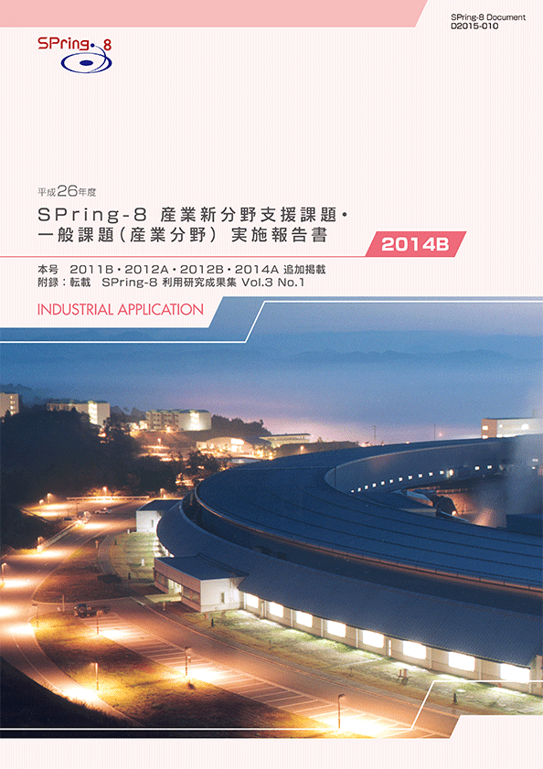
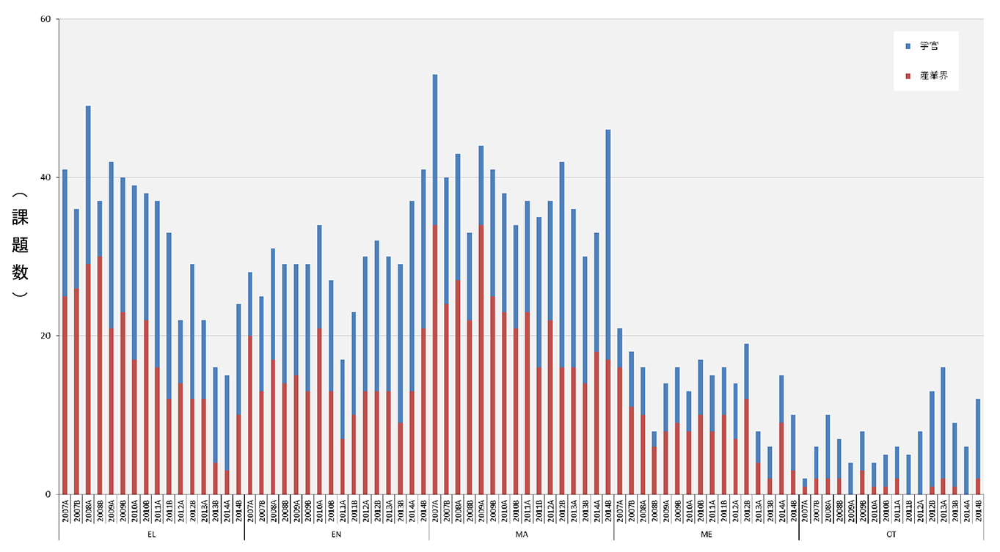
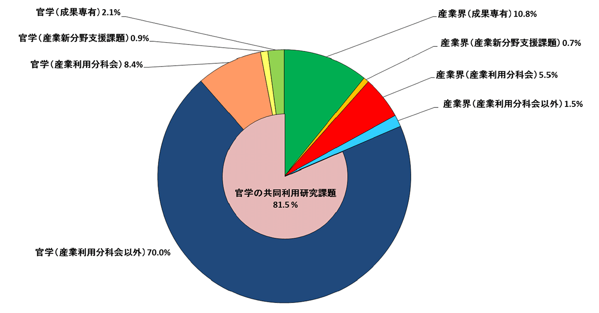
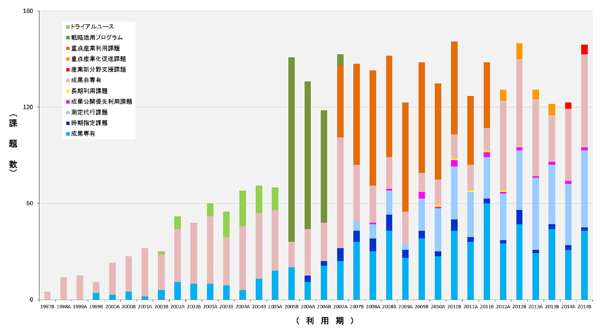
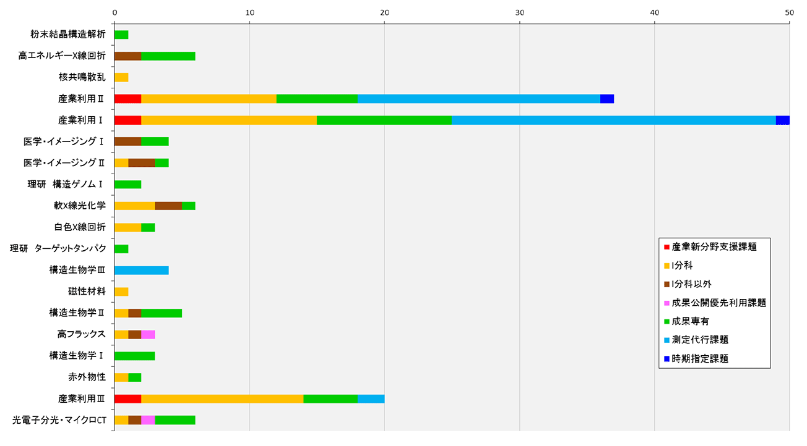

1. はじめに2. 課題募集制度の概要
3. 成果公開の考え方
4. 実施状況
5. 産業利用分野の利用動向
6. 報告書の採録対象
7. 報告書
* 送付を希望される方は、連絡先（氏名、所属、〒住所、E-mail）をご記入の上、 事務局 support@spring8.or.jp までE-mailでご連絡ください。
平成24年度より2年間実施した重点産業化促進課題(領域指定型重点課題)が終了し、平成26年度(2014A期)より新たな領域指定型重点課題として、これまで放射光利用が少なかった産業分野のSPring-8利用の拡大を目指して産業新分野支援課題の募集を開始した。本報告書は新しい利用制度の2期目にあたる2014B期の産業利用分野における課題実施状況の報告を目的として、2014B期に実施した一般課題(産業利用分野)と産業新分野支援課題のうちSPring-8利用研究成果集としての審査を行わなかった課題の報告書を収録したものである。
- 一般課題（産業利用分野）
一般課題(産業利用分野)の課題とは、課題申請の際に産業利用分野(I)での課題審査を希望した成果非専有の一般課題(課題審査は課題審査委員会産業利用分科会が行う)を指し、課題申請者の所属で区別されるものではない。大学等の公的研究機関に所属する者でも、一般課題(産業利用分野)への申請は可能である一方、民間企業に所属する者が他の審査分野に申請することも可能である。なお、民間企業に所属する者が産業利用分野以外の分野に申請した課題は一般課題(産業利用分野)としては扱わない。一般課題(産業利用分野)の募集は他分野の一般課題と同様に、年2回の課題募集期間において全ての共用ビームラインへの申請が可能である。一般課題(産業利用分野)に特徴的な制度は以下の6項目である。
a) 産業利用ビームラインI(BL19B2)、II(BL14B2)、III(BL46XU)は半期ごとに前半を1期、後半を2期とした2回の課題募集を行う(年4回課題募集を実施)。1期と2期の両方で利用実験を行いたい場合は、継続的な研究内容の課題であってもその都度、新規課題として応募することが必要である。なお2013A期よりこれらのビームラインでは成果非専有の一般課題は、審査希望分野が産業利用分野である一般課題(産業利用分野)のみとした。これらのビームラインを指定した申請であるものの、審査希望分野が他分野の課題は申請者の希望にかかわらず産業利用分野で審査する。
b) 新規利用拡大の観点から課題審査において利用経験を考慮する。
c) 民間企業利用拡大の観点から課題審査において所属機関を考慮する。
d) 課題実施後約2～4か月以内に所定の書式の産業利用課題実施報告書を提出する。なお、この報告書はSPring-8利用研究成果集として審査を受けることも可能である。
e) 全採択課題に担当コーディネーターを配置する。
f) 科学技術的妥当性に関する審査は
(1)産業基盤技術としての重要性および発展性
(2)社会的意義および社会経済への寄与度の観点を重視して実施する
に重点をおいて実施する。
- 産業新分野支援課題
「産業新分野支援課題」を領域指定型の重点研究課題として、平成25年9月24日に指定した。その狙いは以下のとおりである。
これまでの産業利用促進の取り組みにより、一部の産業分野ではSPring-8の放射光利用が普及した一方、経済のグローバル化を反映して国内の産業構造も大きく変化し、新しい産業の創生をもたらすような研究開発が必要になっている。そこで、新産業分野の研究開発を促進するため、SPring-8で放射光利用に新規に取り組む産業分野の課題に重点的な支援を行う産業新分野支援課題を実施する。
2-1) 募集の対象
産学官連携促進が目的であるため、研究組織(共同で実験を行うグループ、つまり実験責任者と共同実験者から成るグループ)が「産学」、「産官」、もしくは「産官学」である課題を募集の対象とする。例えば、産業界(民間企業を指す)を含まない「官学」の研究組織や産業界のみから成る組織は対象とはならない。また、JASRIは独立した所属機関とは見なさない(JASRIは「産」「官」のいずれにもあたらない)。
申請の折には産学官連携が効果的に行われることを明らかにするために、課題実施にあたって、それぞれの所属機関ごとの役割分担を明記することが求められる。る。
課題の目的に沿って、SPring-8での放射光利用実績の少ない産業分野の研究開発に関する課題を募集の対象とする。該当する産業分野の例として食品･食品加工、農林水産物、建設資材、金属加工、鉱物資源が挙げられるが、この限りではない。例示された分野に該当しない場合は、課題申請の際に放射光利用実績の少ない産業分野であることの説明が求められる。なお、重点産業化促進課題のような実験責任者及び共同実験者の所属機関に関する要件は設定しない。
2-2) 対象ビームライン、シフト数割合、及び募集
産業利用ビームラインI(BL19B2)、II(BL14B2)、III(BL46XU)を対象に、ユーザー実験に供するビームタイムのうち20%以内(施設留保を含めたユーザータイムの16%以内)を配分する。
募集は一般課題と同時期に半期2回行う。なお、1期募集において採択された通期課題の2期分のシフト数も含めた合計シフト数が半期を通じたビームタイムの上限に達した場合は2期に募集を行わない。
2-3) 通期課題
1期、2期の両方で利用実験を行いたい場合は、その都度新規課題としての応募が必要であるが、継続的･計画的な実施により一層の成果創出が期待される課題は、“通期課題”とし1期応募の折に2期分のシフト数も含めた申請を受付ける。なお、2期は通期課題の募集は行わない。
2-4) 審査
一般課題(産業利用分野)に先んじて課題審査委員会産業利用分科会が審査を行う。なお、産業新分野支援課題として不採択となった課題は、自動的に一般課題(産業利用分野)の課題として、他の一般課題と一緒に改めて審査される。産業新分野支援課題においては一般課題(産業利用分野)の観点に加えて研究対象がSPring-8での放射光利用の新規な産業分野に該当するかどうかも含めて審査する。
2-5) 報告
WEBより提出するビームタイム利用報告書、利用実験課題報告書に加えて課題実施後約2～3か月以内に所定の書式の産業新分野課題実施報告書を提出する。なお、この報告書はSPring-8利用研究成果集として審査を受けることも可能である。
成果の公開については、産業新分野支援課題、一般課題(産業利用分野)ともに他の成果非専有の一般課題と同様に学術誌上への論文掲載(博士論文も含む)もしくはSPring-8利用研究成果集への採録による成果公開が求められる。この産業利用課題実施報告書及び産業新分野支援課題実施報告書の提出は成果の公開とは認定されないが、これらの報告書は著者からの申し出によりSPring-8利用研究成果集としての審査を受けることが可能である。SPring-8利用研究成果集としての審査を受けない実施報告書は、JASRIコーディネーター等による校閲を経て課題実施期が終了して約6か月後に出版･公開されるが、それ以外はSPring-8利用研究成果集としての審査終了後に公開される。
なお、平成26年度2014B期の一般課題(産業利用分野)及び産業新分野支援課題の実施報告は、平成28年9月に開催予定の「第13回SPring-8産業利用報告会」等で口頭及びポスター形式での報告を予定している。
- 応募・採択結果 産業新分野支援課題
表1．応募時期及び研究機関別課題応募・採択結果
*課題で不採択となり、一般課題として再審査され採択された課題は採択数から除外している。募集時期 機関分類 応募数＊ 採択数＊ 採択率（%） 第1回募集学官55100.0産業界44100.0合計99100.0第2回募集学官33100.0産業界4250.0合計7571.4総計161487.5
産業新分野支援課題は2014A第1期より募集を開始したが、制度に対する利用者の認知が低いためか、A期を通じての応募数は12件、採択数が10件に過ぎなかったが、利用者への認知が進んだためか、全応募が16件、採択が14件となった。採択課題は食品や金属加工、及び鉱物資源に関連した課題で、食品分野の課題が半数近くに達した。
募集対象としている利用分野が“放射光利用が少ない産業分野”であるため2014B第1期、2期ともに2014A期と同様、応募シフト数は採択シフト数の上限に達していないが、課題申請書記載の実験計画が本制度の趣旨に適合しないと判断された課題や実験内容が充実していない課題は不採択となった。2014B期は産業新分野支援課題として不採択になった課題は再審査された一般課題においても全て不採択となった。それにもかかわらず採択率は一般課題を大きく上回って新分野における放射光利用促進の目的に沿った結果となった。
- 応募・採択結果 一般課題（産業利用分野）
表2．応募時期及び研究機関別一般課題応募・採択結果
*応募数には産業新分野支援課題で不採択となり、一般課題として再審査された課題(2期産業界 2課題、学官 0課題)を含む。また、採択後に12条課題に分類されるJASRI職員から申請された課題を応募数(1期 13課題、2期 9課題)、採択数(1期 9課題、2期 6課題)を除く。一般課題と同時に審査される萌芽的研究支援課題の応募数(1期 4課題、2期 2課題)、採択数(1期 1課題、2期 2課題)を除く。募集時期 機関分類 応募数＊ 採択数＊ 採択率（%） 第1回募集 学官473778.7産業界433069.8合計906774.4第2回募集 学官312064.5産業界191789.5合計503774.0総計14010474.3
一般課題(産業利用分野)は応募数が140課題(12条課題を含めると158課題)で2013B期の応募数130課題より若干多くなった。これは、2013B期は2014年1,2月に蓄積リングの運転がなく、第2期のビームタイム配分が2013年内となって、1期、2期の募集期間間隔が14年度より短くなったことによるものと考えている。以上のように応募数は2013Bより増加したが2012B期の水準までには回復していない。特に学官からの応募の減少が大きい。これは課題募集期に“2015A期より産業利用分野への申請は、実験責任者もしくは共同実験者に産業界、もしくはそれに準じる機関に所属する者を含むことが要件になる”と先行的に案内したことによるものと理解している。一方、産業界からの応募の減少には一旦歯止めがかかったように見える。
- SPring-8利用研究成果集としての審査
前記のとおり2011B期より成果公開の扱いが変更になったため、実験責任者の希望に応じて重点産業利用報告書をSPring-8利用研究成果集として査読審査を受けて公開文書として扱うことも可能とした。産業新分野支援課題及び産業利用分野の一般課題も同様で、SPring-8利用研究成果集として審査を受ける公開文書とすることができる。平成27年7月10日の時点で実施報告書作成対象118課題のうち33課題がSPring-8利用研究成果集としての審査を希望している。公開は査読審査が終了し成果審査委員会での承認後となるため、少なくともこれら33課題の報告書はここには採録されない。
-
１)産業分野ごとの動向
図1は、産業利用分科会で審査を経て採択された成果非専有課題実施件数の推移である。2014A期以降は産業新分野支援課題と一般課題(産業利用分野)の和、2012A期から2013B期までは重点産業化促進課題と一般課題(産業利用分野)の和、2011B期以前は重点産業利用課題と一般課題(産業利用分野)の和である。かつて産業利用の主役であったエレクトロニクス分野(EL)の利用は減少の一途であったが、今期は産業界も含めて逆転に転じた。これが一時的なものなのか、それとも本格的な回復への第一歩なのかは現時点で判断することができない。今後の推移に注目している。素材分野(MA)、エネルギー環境分野(EN)も2013B期より利用が増えている、実施課題数全体が増えたことを反映したものと考えている。特にエネルギー環境分野での産業界の利用が増えていることが特徴的である。なお、健康・医療分野(ME)は2013B期のほぼ2倍に増加したが、2014A期と比較して民間企業による利用が減少している。これは、2015A期以降も産業界の参画を課題申請要件としない産業新分野支援課題の採択が増えたことによる。産業新分野支援課題は、まだまだ応募、実施数ともに多くはないが、新分野の利用促進に一定の効果があったことがわかる。

図1. 産業利用分野における成果非専有課題実施件数
２）2014B期における民間企業の利用状況
図2は2014B期共同利用研究実施課題(共用ビームラインで実施した課題)を所属機関、専有／非専有の別でその割合を示している。民間企業に所属する実験責任者の課題数が全体の18.5%で2013B期の20.0%より減少したが、実施課題数は図3に示すように2013B期、2014A期よりも多くなっている。割合の減少は官学を含めた全実施課題数が2013B期よりも増加したことが主因である。なお、利用課題種の内訳は一般課題(産業利用分野)が5.9%、産業新分野支援課題が0.7%、測定代行を含む成果専有課題が10.8%で2013B期よりも成果専有課題の割合が若干少なくなった。この理由として、民間企業による成果専有型の課題を利用の中心に据えた“あいちシンクロトロン光研究センター”の稼働が考えられるため、今後の利用動向に注意を払うとともに、今後は同センターをはじめ国内の他の放射光施設との役割分担と連携を検討することが重要になると考えられる。一方、産業新分野支援課題の重点産業化促進課題に対する割合が2014A期と同様に2013B期の約半分となり、改めて産業新分野支援課題に該当する新規利用分野開拓が必要であることを示す結果となった。

図2. 2014B期 共同利用研究実施課題における民間企業の実験責任者の割合
３）民間企業の課題実施動向
図3は共用ビームラインにおける民間企業の課題実施状況の推移を課題種ごとに示している。毎年B期はA期よりも実施課題数が多い傾向があるが、運転時間が短かった2013B期を除いて、ほぼ例年並みの実施であった。

図3．民間企業による共同利用研究実施課題の課題分野別推移
４）民間企業の共用ビームライン利用状況
2014B期におけるビームラインごとの民間企業による利用件数を図4に示す。一般課題(産業利用分野)及び成果専有課題は、産業利用ビームラインI、II、IIIでの実施が他のビームラインよりも著しく多いのはこれまでと同様である。また、産業利用I、IIビームラインにおいて測定代行を含む成果専有課題が一般課題(産業利用分野)及び産業新分野支援課題などの審査課題よりも実施件数が多くなるのもここ数年の傾向である。特に測定代行はXAFS測定代行を実施しているBL14B2よりもBL19B2の方が数多く実施された。これはBL19B2において従来より実施していた粉末回折測定代行に加えて小角散乱測定代行の実施が本格化したことの現れである。

図4．2014B期 利用技術分野別（ビームライン別）民間企業利用件数
平成27年7月10日の時点で課題のうち少なくとも33課題が利用研究成果集としての審査を希望している。これ以外の82課題の産業新分野支援課題実施報告書と産業利用課題実施報告書を採録している。また、追加掲載として、2011B期1課題、2012A期1課題、2012B期4課題、2014A期1課題も掲載している。また、SPring-8利用研究成果集として新たに採択、公開された課題も付録としてSPring-8利用研究成果集より転載して採録している。
SPring-8利用研究成果集 Vol 3 No.1 （http://user.spring8.or.jp/resrep/?cat=16）
連絡先（氏名、所属、〒住所、E-mail）をご記入の上、事務局 support@spring8.or.jp までE-mailでご連絡ください。